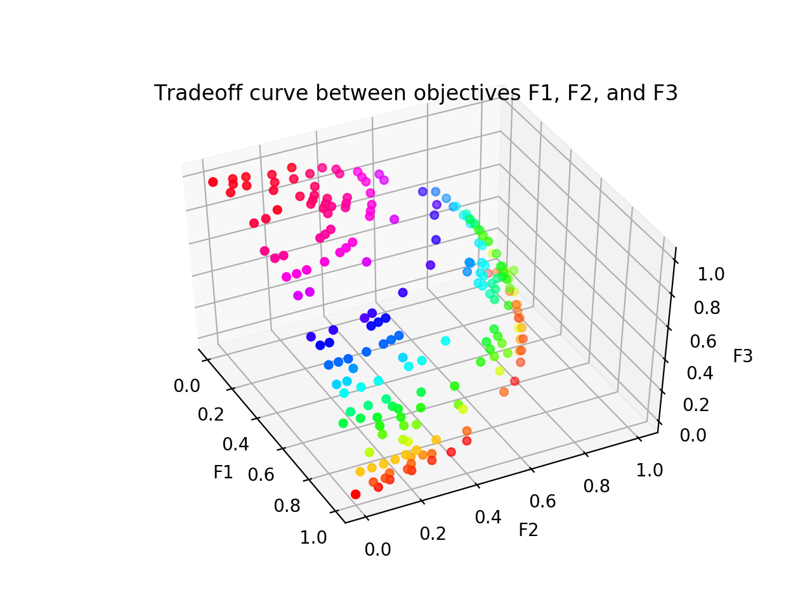

Tyler H. Chang
Argonne National Laboratory, MCS Division
About me:
I am a Postdoc at Argonne National Laboratory in the Mathematics and Computer Science (MCS) Division. I received my Ph.D. in Computer Science from Virginia Tech in 2020, where my thesis was Mathematical Software for Multiobjective Optimization Problems.
My current research interests include Nonconvex Optimization, Approximation Theory, Numerical Analysis, Computational Geometry, Functional Analysis, Algorithms, and Parallel Computing, with a focus on applications in Scientific Computing, Data Science, and Engineering.
Specifically, some of my work has included:
- Multiobjective Optimization of computationally expensive blackbox simulations;
- efficiently computing Delaunay Triangulations in medium to high dimensions;
- Interpolation of high-dimensional blackbox functions;
- and producing high quality, portable Mathematical Software (both serial and parallel).
Projects:
DELAUNAYSPARSE
The Delaunay triangulation is a well-studied simplicial mesh, widely considered optimal for interpolation applications. Delaunay triangulations have recently garnered some interest in the machine learning community, for their interpretability in the context of regression and classification problems. Unfortunately, the "curse of dimensionality" manifests in the size of the Delaunay triangulation, making it uncomputable for high-dimensional big data problems.
DELAUNAYSPARSE is an open source Fortran package that computes sparse subsets of the complete Delaunay triangulation, as needed to perform interpolation. The resulting codebase is fast, robust, and portable; and features both serial and parallel implementations. Interfaces are available for usage as a Fortran library, C/C++ library, Python module, or from the command line. Download DELAUNAYSPARSE here or from GitHub.
VTMOP The multiobjective optimization problem (MOP) is a generalization of the single objective optimization problem. Instead of attempting to minimize a single cost or loss function, a MOP attempts to balance the tradeoff between multiple, potentially conflicting objectives. Applications arise in many areas of science and engineering, including model fitting, computational chemistry, portfolio optimization, economics, and aircraft design. The solution to a MOP is a set of nondominated points describing the tradeoff between the conflicting objectives, called the Pareto front.
VTMOP is a flexible open source Fortran package for approximating tradeoff curves between arbitrary numbers of objectives, targeted at large scale multidisciplinary design optimization problems. This work was partially funded by a DOE SCGSR award, in collaboration with Argonne National Laboratory (see Awards).
VTMOP is currently under review for publication, and therefore not yet publicly available. However, a VTMOP plugin is available through the libEnsemble library.
Quantum Annealing Math Library (QAML)
 Quantum annealing (QA) is an implementation of the general purpose
adiabatic quantum computing (AQC) model for quantum computing.
QA balances the theoretical properties of AQC against real-world
practicalities, allowing for faster progress in near-term QA hardware.
Quantum annealing (QA) is an implementation of the general purpose
adiabatic quantum computing (AQC) model for quantum computing.
QA balances the theoretical properties of AQC against real-world
practicalities, allowing for faster progress in near-term QA hardware.
QAML is an open source Python project, which embeds least squares and polynomial sum-of-squares problems (with real, integer, Boolean or mixed variables) on the D-Wave quantum annealer. These broad classes of problems are ubiquitous in scientific computing, machine learning, and data science. Code available on GitHub.
Publications:
Selected Publications: (For full list, see my CV or my Google Scholar page)
Tyler H. Chang, Layne T. Watson, Thomas C.H. Lux, Ali R. Butt, Kirk W. Cameron,
and Yili Hong.
2020.
Algorithm 1012: DELAUNAYSPARSE: Interpolation via a sparse subset of the
Delaunay triangulation in medium to high dimensions.
ACM Transactions on Mathematical Software 46(4), Article No. 38, 20 pages. ACM.
 ACM DL
BIB
ACM DL
BIB
Tyler H. Chang, Jeffrey Larson, Layne T. Watson, and Thomas C. H. Lux.
Managing computationally expensive blackbox multiobjective optimization
problems with libEnsemble.
In Proc. 2020 Spring Simulation Conference (SpringSim '20).
SCS, Fairfax, VA, USA, Article No. 31, 12 pages.
 ACM DL
BIB
SLIDES
ACM DL
BIB
SLIDES
Tyler H. Chang, Thomas C.H. Lux, and Sai Sindhura Tipirneni.
2019.
Least-squares solutions to polynomial systems of equations with quantum
annealing.
Quantum Information Processing 18(12), Article No. 374.
Springer.
 SpringerLink
BIB
SpringerLink
BIB
Tyler H. Chang, Layne T. Watson, Thomas C. H. Lux, Jon Bernard, Bo Li, Li Xu,
Godmar Back, Ali R. Butt, Kirk W. Cameron, and Yili Hong.
2018.
Predicting system performance by interpolation using a high-dimensional
Delaunay triangulation.
In Proc. SpringSim 2018, the 26th High Performance Computing Symposium
(HPC '18).
SCS, Baltimore, MD, USA, Article No. 2, 12 pages.
 ACM DL
BIB
ACM DL
BIB
Tyler H. Chang, Layne T. Watson, Thomas C. H. Lux, Bo Li, Li Xu, Ali R. Butt,
Kirk W. Cameron, and Yili Hong.
2018.
A polynomial time algorithm for multivariate interpolation in arbitrary
dimension via the Delaunay triangulation.
In Proc. 2018 ACM Southeast Concerence (ACMSE '18).
ACM, Richmond, KY, USA, Article No. 12, 8 pages.
 ACM DL
BIB
SLIDES
ACM DL
BIB
SLIDES
Thomas C. H. Lux, Layne T. Watson, Tyler H. Chang, Yili Hong, and Kirk W. Cameron. Interpolation of sparse high-dimensional data. To appear in Numerical Algorithms, Springer.
Tyler H. Chang, Jeffrey Larson, and Layne T. Watson. Multiobjective optimization of the variability of the high-performance LINPACK solver. To appear in the 2020 Winter Simulation Conference.
Under Review:Thomas C.H. Lux, Layne T. Watson, Tyler H. Chang, and William I. Thacker. Algorithm XXXX: MQSI---Monotone quintic spline interpolation. Under review with ACM Transactions on Mathematical Software (since August, 2020).
Tyler H. Chang, Layne T. Watson, Jeffrey Larson, William I. Thacker, Shubhangi Deshpande, and Thomas C.H. Lux. Algorithm XXXX: VTMOP: Solver for blackbox multiobjective optimization problems. Under review with ACM Transactions on Mathematical Software (since June, 2020).
Awards:
Cunningham Doctoral Fellowship (Fall, 2016 - May, 2020: Virginia Tech, Graduate School)The Cunningham Doctoral Fellowship is a Virginia Tech university level fellowship.
DOE SCGSR Awardee (June - December, 2019: US Dept. of Energy, Office of Science)Recipient of the US DOE, Office of Science Graduate Student Research Program (2018 Solicitation 2 cycle).
Departmental Fellowships (2016 - 2020: Virginia Tech, Dept. of Computer Science)
- Recipient of Davenport Leadership Fellowship for 2016-17 academic year and 2019-20 academic year.
- Recipient of Pratt Fellowship for 2017-18 academic year and 2018-19 academic year.